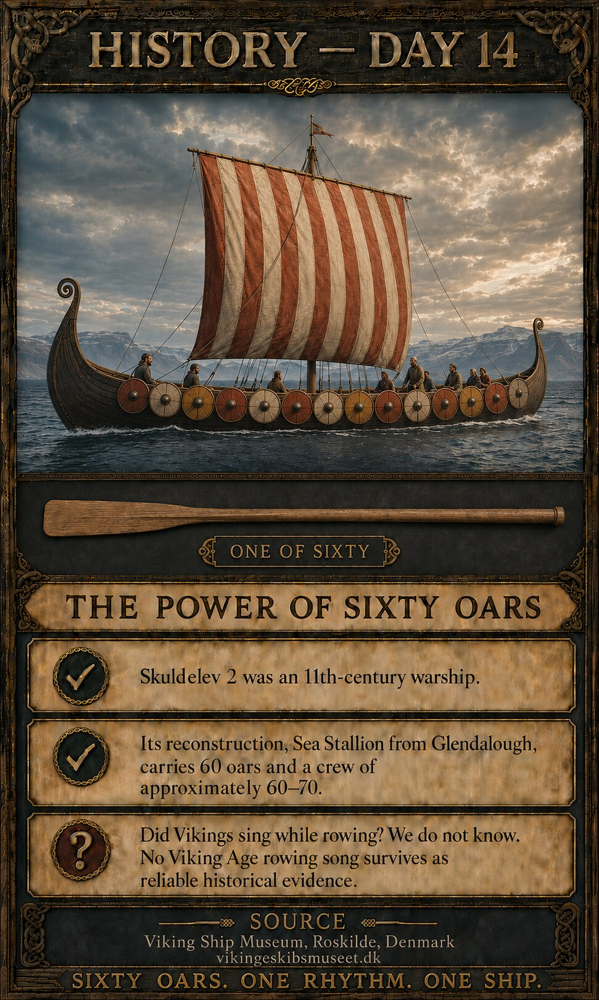
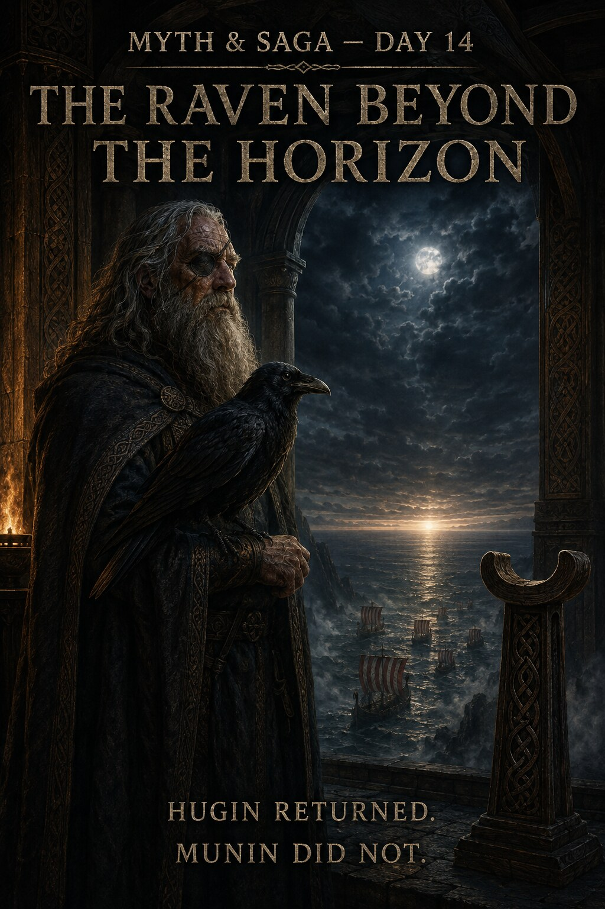
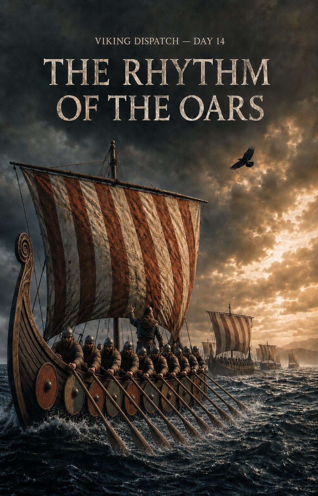
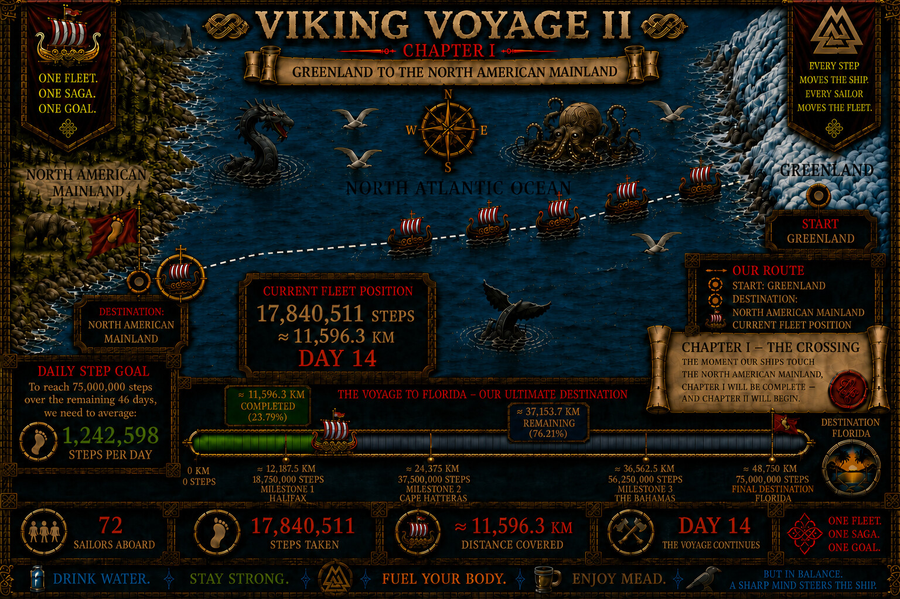
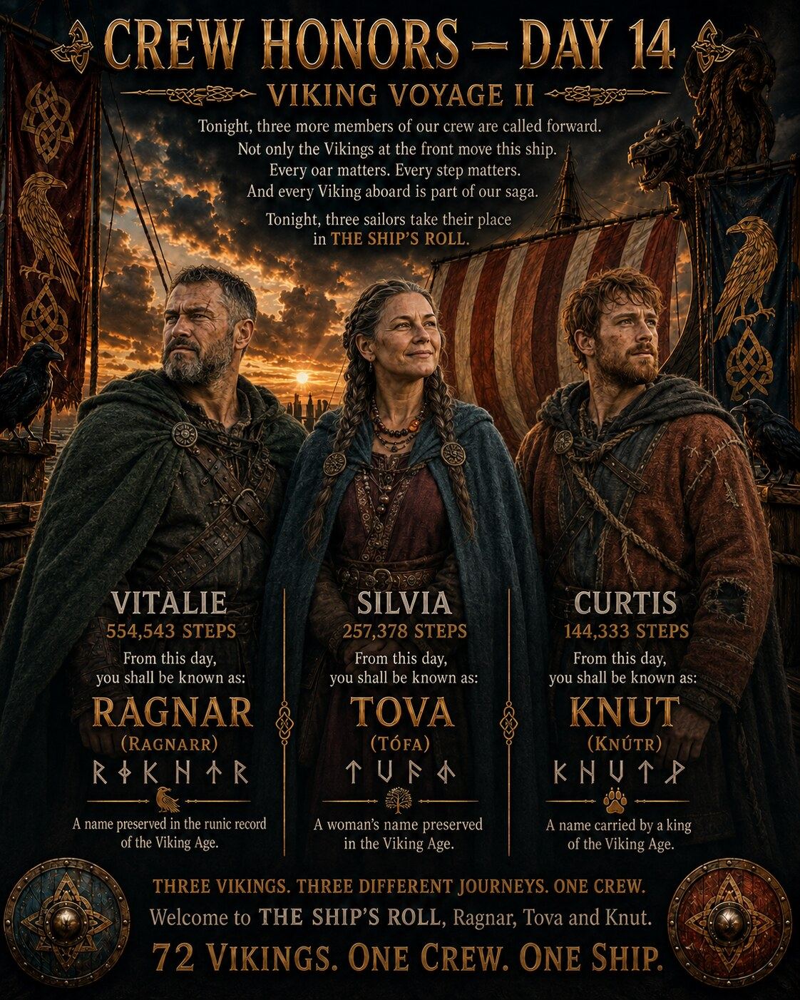
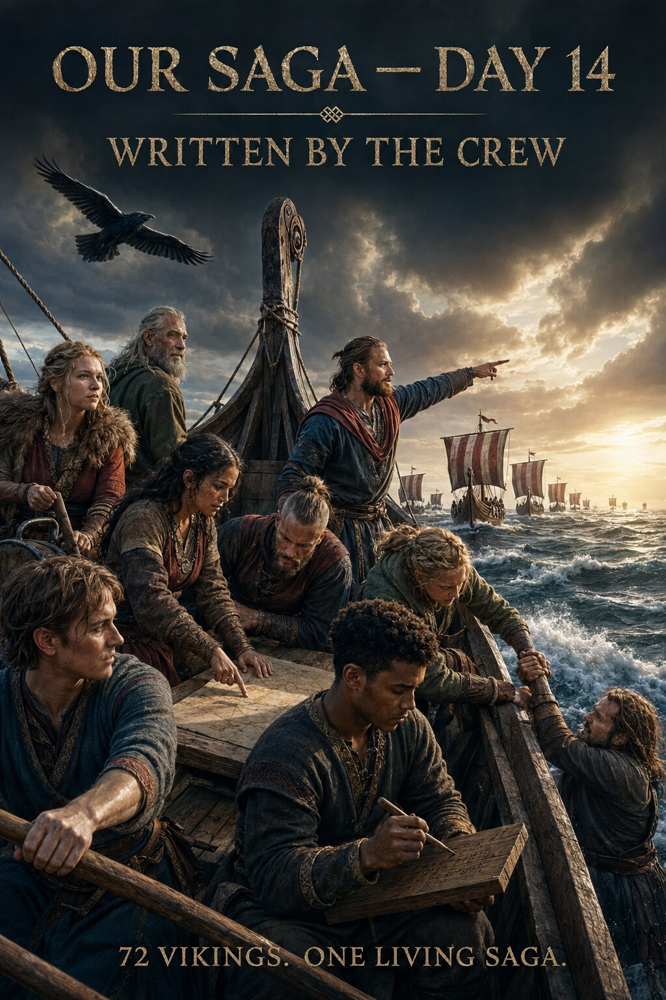
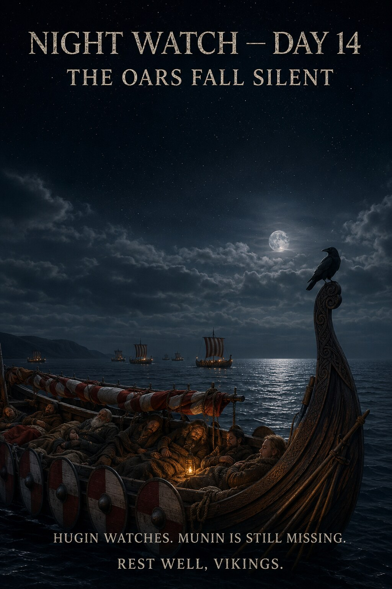

CHAPTER I COMPLETE
Real activity in Pacer moves the ship. These are the latest verified numbers from our crew.


One raven watches the new shore. The other is still somewhere beyond the horizon.
MORE THAN A QUARTER OF THE VOYAGE
72 Vikings have carried the fleet to 19,155,478 steps — approximately 12,451.1 km since Greenland.
During Day 15, the crew added 1,314,967 steps. The fleet has now completed 25.54% of the full 75,000,000-step voyage.
55,844,522 steps — approximately 36,298.9 km — remain before Florida. With 45 days remaining, the required pace is approximately 1,240,989 steps per day.
Greenland lies behind us. The North American mainland is beneath our feet. The voyage now turns south.
72 VIKINGS. ONE CREW. ONE SHIP.
GREENLAND ➜ FLORIDA
CHAPTER I — THE CROSSING — COMPLETE
After 19,155,478 steps — approximately 12,451.1 km — the fleet has reached the North American Mainland. The North Atlantic crossing is complete.
This is the final map of Chapter I. It is now frozen as the first completed page in the chronological atlas of Viking Voyage II. From the next update, the route continues south in Chapter II.
THE VOYAGE BECOMES A LIVING SAGA
THE EMPTY SKY
Hugin has returned.
Munin has not.
Above the fleet, one black shape circles beneath the night sky. Again and again, Hugin turns his head toward the darkness behind us, as if waiting for another set of wings to appear.
The crew notices. No one has an answer.
Below him, the ships keep moving. The North American mainland is finally within reach, and every oar continues to pull toward it.
The Captain gives only one order:
KEEP ROWING.
The fleet reaches land. But somewhere beyond the horizon, one raven is still missing.
HUGIN WATCHES. THE SKY BESIDE HIM REMAINS EMPTY.
TO BE CONTINUED…
THREE MORE NAMES ENTER THE SHIP'S ROLL
EVERY OAR MATTERS
Crew Honors belongs to OUR SAGA. It is a Viking Voyage II tradition, not a claimed reconstruction of a documented Viking Age ceremony.
Every honored member receives an individual Viking name and a distinct appearance within our living saga. Once entered into THE SHIP'S ROLL, both remain with that sailor for the rest of the voyage.
NAMES CARRIED ABOARD
Permanent pairings verified in the current working register. Entries still under historical review are not presented here as final.
THE NORTH ATLANTIC CROSSING IS COMPLETE
For fifteen days, we watched the horizon.
We left Greenland behind and pushed westward across the cold North Atlantic — one step, one sailor, one day at a time.
Tonight, there is land beneath our feet.
19,155,478 steps.
≈ 12,451.1 km.
72 Vikings.
And for the first time since this voyage began, we can turn around and see what we have crossed.
But Vikings were never meant to stand still.
Ahead lies a new coastline. A new route. A new chapter of our saga.
CHAPTER I IS COMPLETE.
CHAPTER II AWAITS.
ONE FLEET. ONE SAGA. ONE GOAL.
FLORIDA STILL WAITS.
THE POWER OF SIXTY OARS
Skuldelev 2 was an 11th-century long warship. Its modern reconstruction, Sea Stallion from Glendalough, carries 60 oars and a crew of approximately 60–70 people.
Moving such a ship required strength, endurance and coordination across the entire crew.
Did the Vikings sing to keep time while rowing? The honest answer is that we do not know. Calls, commands or rhythm may have helped, but no Viking Age rowing song survives as reliable historical evidence.
THE SAGA MAY BE WILD. THE HISTORY MUST BE TRUE.

THE RAVEN BEYOND THE HORIZON
Far above the mortal sea, Hugin returned to Odin's hall.
Odin looked toward the empty perch beside him.
Thought had come home. Memory had not.
HUGIN RETURNED. MUNIN DID NOT.
TO BE CONTINUED…

DAY 14 — THE LAST FULL DAY AT SEA
The previous day's visual record remains aboard as part of the voyage archive. Tap any picture to enlarge it.





POWERED BY OUR CREW
Viking Voyage II is a community step challenge whose voyage is driven by real activity recorded by participants in the Pacer app. Pacer is the platform used by our crew; Nordic Viking Heritage and Viking Voyage II are an independent community project.
THE HISTORY MUST BE TRUE
Historical material is kept separate from OUR SAGA and checked against archaeological and scholarly sources. Day 14's section uses information from the Viking Ship Museum in Roskilde about Skuldelev 2 and its reconstruction, Sea Stallion from Glendalough.
Old Norse forms and Viking Age name evidence used in Crew Honors are checked against runic and scholarly name resources, including Riksantikvarieämbetet's runic database and ISOF's Nordiskt runnamnslexikon.
VIKING SHIP MUSEUM — SKULDELEV 2
ISOF — NORDISKT RUNNAMNSLEXIKON
RIKSANTIKVARIEÄMBETET — RUNOR
“Every step counts.
Every Viking matters.”